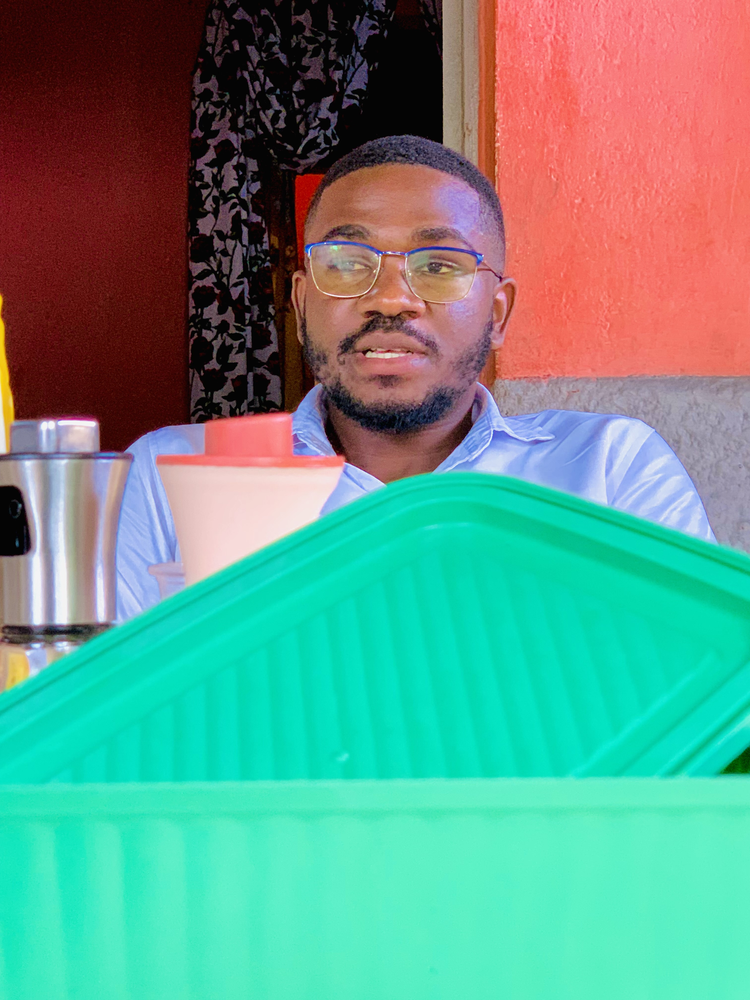

Café 01
kz 150/-
mais que um café, um companheiro das suas manhãs
compre o seu agora mesmo
Formada por um grupo de empresários ligados ao setor cafeeiro há mais de 15 anos, a nossa missão não é só oferecer a maior variedade de produtos de alta qualidade, mas também incentivar o consumo de cafés especiais. .Hoje contamos com o que há de mais moderno em tecnologia e com os melhores fornecedores e parceiros do mundo do café. Trabalhamos com muito empenho para poder oferecer sempre o melhor: produtos tradicionais, novidades do mercado, qualidade e rapidez na entrega. Tudo isso, aliado a preços justos e a máxima segurança para que você compre com tranquilidade. A sua opinião sempre é muito importante, então estamos abertos a receber sugestões e críticas, por isso, caso deseje, entre em contato conosco através do e-mail cafeteiragervasio57@gmail.com ou do telefone 939392397. É considerado um café especial aquele que tem qualidade durante todo o seu processo de produção até chegar na xícara, tem complexidade sensorial e possui ausência de defeitos.
saber mais


Além de delicioso, este café faz bem à saúde e pode ser um aliado na luta contra doenças como o câncer, depressão, estresse e diabetes.
este café para mim significa um novo começo de um dia de estudos, um símbolo de me envolver em debates com os professores sobre inumeros projetos.
além do bem estar, quando tomo uma xícara de café ao amanhecer, me faz muitos efeitos positivos no meu organismo.

Desde o primeiro dia que tomei este café, sinto que esta forte bebida age na minha área cerebral responsável pelos pensamentos positivos.
Tenho esta bebida como um líquido sagrado de todos os dias. o grão torrado citado no livro de Samuel seria este café.
O que me faz ter tanto gosto em tomar café é porque contém uma série de nutrientes, como vitaminas b2, b3, b5 e manganês, magnésio e potássio.